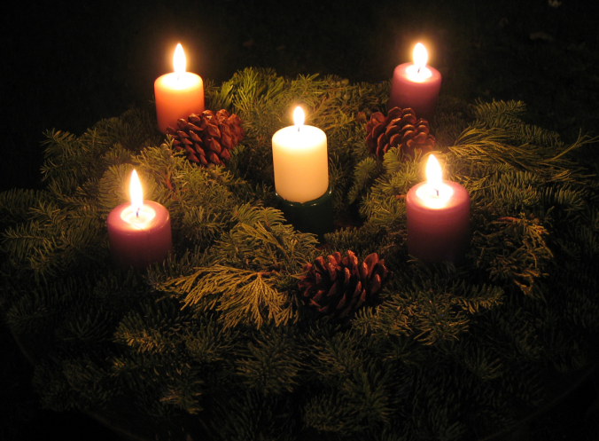
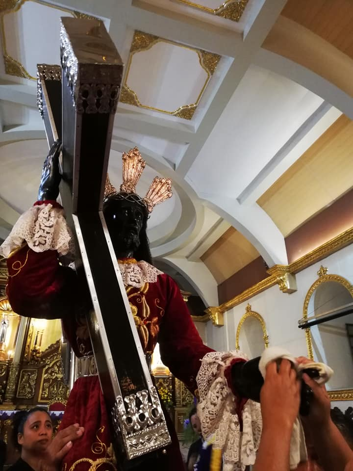
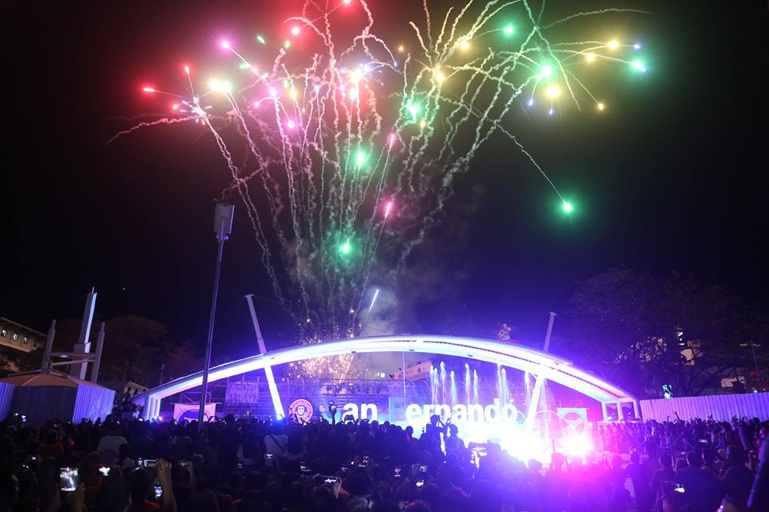

What is Advent?
The word “Advent” is derived from the Latin word adventus, meaning “coming,” which is a translation of the Greek word parousia.By the 6th century, however, Roman Christians had tied Advent to the coming of Christ. But the “coming” they had in mind was not Christ’s first coming in the manger in Bethlehem, but his second coming in the clouds as the judge of the world. It was not until the Middle Ages that the Advent season was explicitly linked to Christ’s first coming at Christmas...
Read More
Ckcians: Celebrating the Advent Season
December 3 2018 - Ckcians celebrated the start of the advent season.
Every year they conducted prayer services while lighting the candles for each week. After they had lighted the candle, they would also put parols to the tree at the center of the peace garden. And for the last week of advent, they would invite a priest for a mass in the school.
There would be an advent wreath to complete the ceremony. The Advent wreath was created out of evergreens, symbolizing everlasting life and reminds us God’s unending love. And the candles symbolizes the light of God coming to the world...
Read More
Did you know?
The Black Nazarene
Every January 9, millions of Catholic faithful are expected to take part in the annual Black Nazarene Feast. Its rituals include the Pahalik, in which devotees line up to touch and kiss the image of Señor Nazareno at the Quirino Grandstand; and the Traslacion, in which the image is carried by bare-footed devotees back to Quiapo Church.The first "Traslacion" happened in 1787 from...
Read More
San Fernando, La Union- Opening of Lights
The City of La Union starts preparing for opening of lights this coming December 1, 2018 to be celebrated at the City Plaza.
There is a fountain under construction and the Christmas tree is is also under construction. Only a few more days left for the upcoming event. Everyone is excited to witness it for it is also the opening of the San Fernando Valley. There they could buy food and enjoy different rides suitable for kids and adults...
Read More
Duterte Announces Early Christmas Vacation
MANILA - The Palace on Wednesday announced that December 26 and January 2, both Mondays, are special non-working holidays.
Acting Executive Secretary Menardo Guevarra signed Proclamation 117 declaring the two dates as special non-working days.
“The declaration of 26 December 2016 and 2 January 2017, both falling on a Monday, as special (non-working)...
Read More